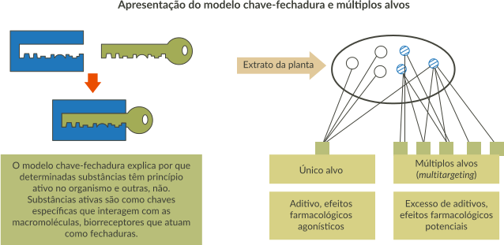

O estudo da farmacodinâmica ao longo dos anos foi centrado em moléculas que apresentam único alvo, mais conhecido como modelo chave-fechadura. No entanto, o fitoterápico não se enquadra nesse modelo. Geralmente, apresenta não uma, mas um conjunto de substâncias ativas (fitoquímicos) que atuam ao mesmo tempo, ligando-se a diferentes receptores, resultando em sinergismo. A esse conjunto de fitocompostos, dá-se o nome de fitocomplexo. Dessa forma, os fitocomplexos apresentam uma abordagem terapêutica mais voltada para o modelo de múltiplos alvos. Sabe-se que, apesar de os efeitos terapêuticos de muitos fitoterápicos estarem clinicamente comprovados, muitos são os mecanismos de ação que ainda não foram totalmente elucidados.

Fonte: FRANCISCO JÚNIOR, W. E., 2009.
Fonte: Adaptado de Wagner; Ulrich-Merzenich, 2009.